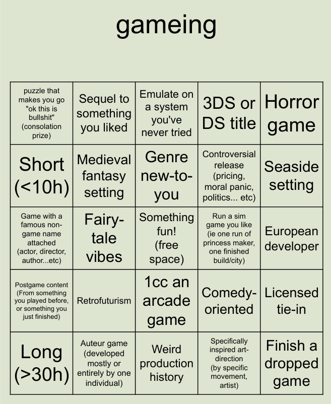
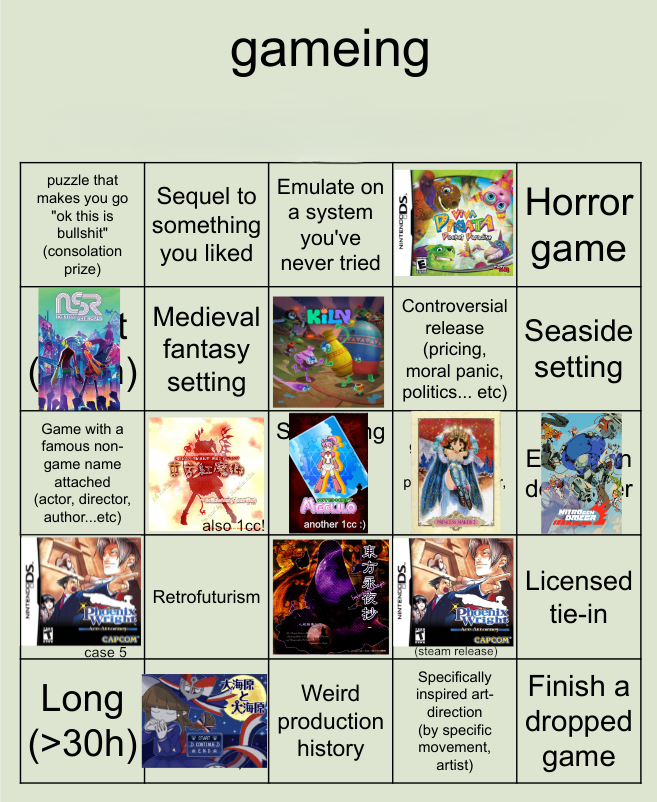

2025 GAME BINGO
I'm one of those people who owns a buncha games, wants to play 'em, and never quite does. Around new years' on the Web I see a lot of 'book bingos' for people with big lists of books to find some they might not have gotten around to and fill out a list in a fun gamified format. I never have trouble finding books to read or reading them, so I've never used these, but they're charming and I thought, why not do that with video games?
Ergo, the Badgersaurus 2026 Game Bingo Board:
>
DA RULES
- Each game can only count for one space. (Exceptions for the Consolation Prize, 1CC, and postgame squares, see below.)
- Story games must have their main storyline BEATEN to be placed on a space. That is, rolled credits. Arcade games must be beaten straight through with as many continues as needed (except for the 1cc space, duh!) Sim games and other endless games must either have one 'run' beaten (ie Princess Maker) or just played until boring (for sandbox games.)
- No buying new games this year (I have a personal exception for Keeper if decent sale.) Make your own rules about 'to-play lists', wishlists, and downloading ROMs, giveaways and freeware if you want.
Other notes:
- Consolation Prize Any game beaten this year can be placed a second time on this space if it had a puzzle or puzzle-like sequence/boss/etc. which pissed you off enough, to encourage you to press through and beat it. I wouldn't recommend finishing something that's miserable all the way through, but pressing through a particularly terrible section for an otherwise good game is good and is intended to be encouraged by this space. Having to fuck around with tech troubleshooting for a gamebreaking bug/emulation issue can also count here (being a sort-of real-life puzzle!)
- Postgame Can be postgame story/extras, getting extra endings, side game modes (ie in Kirby), or newgame+ modes. Basically any return to a game you've finished for extra content counts. A game already beaten and used for another square on this list can appear again here (if you beat Fossil Fighters and put it down on the DS space, then went back afterwards for the post-game vivosaurs and extra battles, you could put it here too.)
- 1CC Normal 1CC rules (no continues, no mods, no savestates, no cheats; turbo/rapidfire, common exploits and remapping acceptable (except for those unusual games where standard turbo breaks them.)) If you beat an arcade game regularly, place it on the board, and later 1CC it, it can be used a second time on this space.
- Specifically-inspired Inspired by a specific artistic movement or even artist: think Paladin's Quest and Panzer Dragoon to 70s eurocomix, Okami to traditional Japanese watercolor ink illustrations, Cruelty Squad's 'digital graffiti' look, etc. Games with art or art direction by a specific artist (ie Darkseed directly using licensed Giger art) will not count (but Scorn would, for being specifically inspired by his work.)
- Famous name Must be an author, actor, director, visual artist, screenwriter, etc... known for their work outside of video games, and must be an original IP (i.e. no Discworld games or movie tie-ins reusing actor footage/dialogue...) Licensed music from real bands/artists that is prominently featured can be used as a reason for this space too. PnCs have a great variety for this: check out 9: The Last Resort, directed and produced by Robert De Niro, starring Cher, Joe Perry and Steven Tyler, James Belushi, and Christopher Reeves, with art by Mark Ryden...
- European Anywhere on the European continent that is not the U.K. or Ireland.
- Game length Base off your own playtime rather than the general consensus. If you can speedrun a long game or play a sim game for 40 hours before getting sick of it, feel free to stick it on one of these.
And that's it! Go for a bingo, fill out as many as possible, or whatever you want.
My card
>
I started counting in December 2025 since that's when most of my winter break is.
- Wadanohara: Dec 7 or so. RPGMaker horror-ish thing I'd been curious about since middle school. Very charming for the first half and very very nasty for the second. I think I liked it overall, interesting theme of loss of innocence and very magical girl-y style that clash in a classic-fairy-tale-darkness way. Hell is for children, as they say.
- Touhou Imperishable Night: Dec 17. My first-ever shmup 1CC! On Easy, sounds like not much but it took a year or so of on-and-off practice to be able to do. My favourite Touhou in terms of characters and music for sure, and pretty easy for beginners, so I've heard. Forsure gonna go back for Normal soonish. One day I'll be able to beat the Extra Stage...
- Touhou EOSD: Dec 21. Easy 1CC a few days after IN, just took a couple practice runs against Sakuya. It's funny looking at my old hiscores from December 2024 and seeing how much I struggled earlier... Very basic shmup but great music and of course characters, setting, outsider-art-ish visuals that make Touhou what it is. I probably won't go back to this one though even if Easy cuts off the final boss, just didn't love playing it so much.
- Phoenix Wright: Ace Attorney: Dec 22. Beat the 4 cases associated w/ this game on the Steam release of the trilogy. I'm really mad at myself for not playing AA sooner--loved the goofy writing and I think the whole primary gameplay system is a great take on P&C adventure principles that solves the primary issue the genre faces; namely, being able to allow for player interaction during fast-paced scenes and tension around player agency... all you ever do is click through text boxes, so you have no idea when you're gonna be called on to make a decision or solve a puzzle or have something taken away from you. Plus you get to cross-examine a parrot. Definitely gonna go back for Case 5 and the sequels!
- No Straight Roads: Dec 23.Encore edition. Replay of one of my all-time favourite games. I started in August and then school happened lol. Literally just had to do the final boss and brief post-boss sequence so this took like an hour. A fun time except for the gameplay... although Encore makes Yinu and 1010 actually fun so you think 'hey maybe this game is good now' and then you fight Eve and you're like.... nevermind. But the writing, music, and visuals more than make up for it!!! Can't wait for the sequel!!
- Witch-Bot Meglilo: Dec 28. Third easy 1cc! I should probably graduate to Normal on my next game lol. A simple dark-comedy/magical-girl shmup with a unique gimmick. Music is uniquely terrible but I guess it does sell the 70s anime vibe. Fun enough for the like three bucks I spent on it, and the cutscenes made me smile, but I don't think I'll come back to this either.
- Princess Maker 2: Jan 5. I wanted a break from Disgaea, so I tried to play Bioshock which was fun until it crashed and deleted my save file, and then I tried to play Myst which was fun until I got stuck on the maze puzzle and got sick of watching the 5-second-long turning animation every time, so I picked up Ol' Reliable PM2-DOS.exe instead. Man do I love this game. Got the housewife ending this time because I fucked up midway with a few things but I maxed out her magic stats at least and so she married a wizard which is pretty cool. Wizard trophy wife doesn't seem so bad to me. She did keep running away this time which kind of pissed me off. Every time I'm reminded Studio Gainax made this it feels like getting punched in the stomach.
- Nitro Gen Omega: Feb 2. Sim-styled sandbox RPG where you control a cast of 4 pilots in a mecha takin' on the post-apocalypse one evil robot at a time. I bought this at early access launch and decided to check it out after they updated the tutorial recently. SOOO fun, the combat is really neat once you wrap your head around it and I love how it works with controlling 4 characters who are all technically the same character. The Trigger/Gainax anime/90s Saturday-morning cartoon/'Spaghetti anime' (think Code Lyoko or '03 Teen Titans) look is sick and the character creator is awesome, made some characters from a comic project of mine and honestly I'm shocked how well I was able to recreate them. And then when one of them died I felt like continuing the save would be in bad taste lol. Excited to come back after more updates.
(Italian-developed, if you're wondering why it gets the Euro space.) - Phoenix Wright: Ace Attorney Case 5 (Rise from the Ashes): Feb 17. Was this originally DSIware? It feels like DSIware. Anyway, talk about a whirlwind trial!! This was even better than Case 4 somehow. Ema is literally me irl. I don't like to throw around 'autistic representation' speak but she really comes off as it to me esp. with how she's kinda slow and naive and isn't just 'quirky' without the lame parts. All really good puzzles once again although I did look up the very very last bit of evidence in the very very last trial because if I got it wrong I'd lose and hadn't saved for a while and didn't want to do it over again... though I know I woulda gotten it (w)right if I just took a minute. Idk I feel like I had to confess to that somewhere. anyway I fucking LOVED this game, new alltime favourite for me, I keep thinking about Miles having to take his car in for drycleaning the trunk after this and it makes me laugh. he has to drive around a dealership car for like a week bc of this bullshit could you imagine how upset hed be